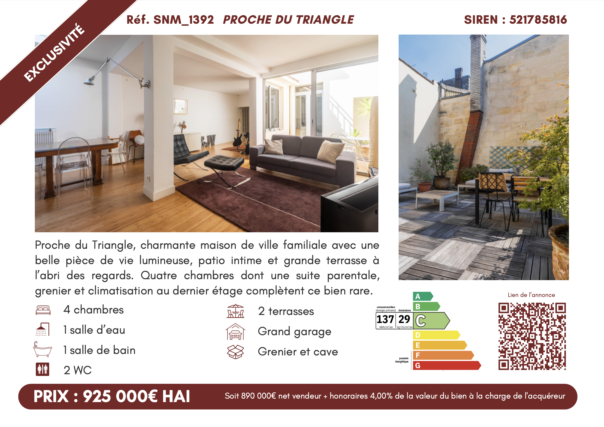
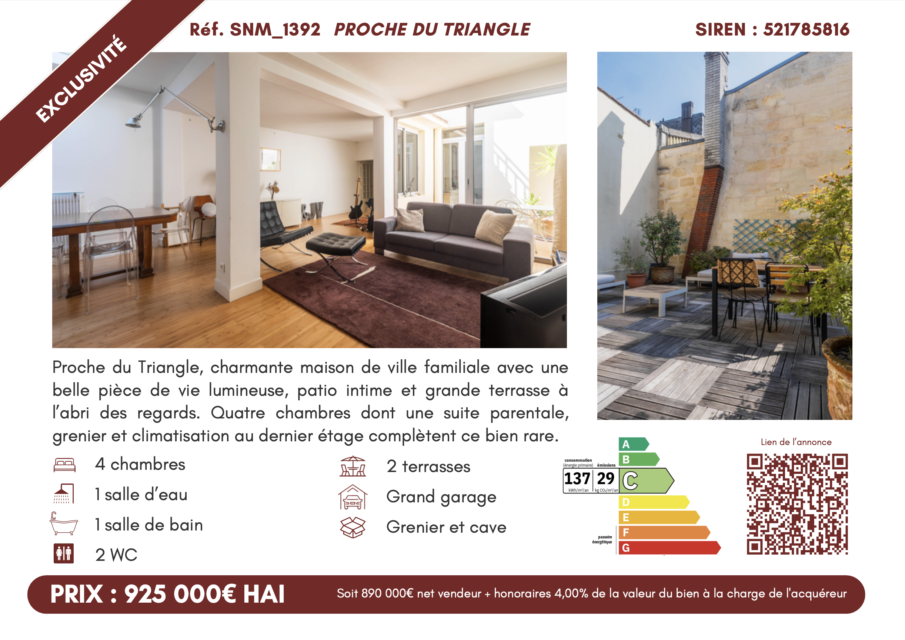

La Bordelaise de l'Immobilier
La Bordelaise de l'immobilier
Depuis octobre 2024, j'ai eu l'opportunité d'effectuer mon alternance au sein de l'agence immobilière La Bordelaise de l'Immobilier en tant que chargée de communication.
Mes missions consistaient à concevoir et publier du contenu sur les réseaux sociaux Instagram et Facebook, ainsi qu'à créer des supports visuels que ce soit pour le digital ou pour les fiches vitrines mettant en avant les nouveaux biens à vendre.
J'assurais également la prise de photos et vidéos, le montage vidéo ainsi que l'animation de la page Google My Business. Également, lorsque l'équipe était en visite ou occupée, je prennais en charge l'accueil des clients et la gestion des appels !
Gestion des réseaux sociaux
Ma mission principale au sein de l'agence était d'animer et de développer sa présence sur les réseaux sociaux. L'agence étant récemment active sur ces plateformes et n'étant pas encore familière avec leurs codes et tendances, mon rôle a été de structurer et de dynamiser sa communication digitale.
Je gérais principalement Instagram et Facebook, en publiant régulièrement du contenu photo et vidéo pour renforcer sa visibilité et son engagement. Pour assurer une gestion efficace, j'avais mis en place une stratégie de communication ainsi qu'un planning éditorial, en m'appuyant sur Trello pour l'organisation et un carnet de notes pour le suivi des idées.
L'ensemble du processus de publication était géré via Meta Business Suite, où je rédigeais les descriptions, planifiais et programmais les posts. Grâce aux compétences développées en formation et à mon investissement personnel, j'avais apporté une approche stratégique et structurée afin d'optimiser la présence digitale de l'agence.
 

Création visuel
Avant de publier du contenu, il fallait d'abord le créer. Pour cela, j'utilisais principalement Canva pour concevoir l'ensemble des publications Instagram et Facebook, ainsi que Photoshop pour retoucher et améliorer certaines photos.
Peu après mon arrivée à l'agence, j'avais travaillé sur la charte graphique et je continuais de l'affiner afin de l'optimiser. C'était une expérience enrichissante, car c'était la première fois que j'avais eu l'opportunité de créer une identité visuelle pour une entreprise.
En parallèle, je réalisais également des fiches vitrines mettant en avant les nouveaux biens disponibles, afin d'attirer l'attention des passants et des potentiels clients devant l'agence.
Lors de la création de ces visuels, je veillais à respecter les couleurs, les formes et la typographie définies dans la charte graphique pour garantir une cohérence visuelle et renforcer l'image de marque de l'agence.
Photos et vidéos
Il m'est arrivé d'accompagner les agents immobiliers lors de visites de biens destinés à la vente, que ce soit pour une première découverte ou pour une présentation à des clients.
Lors de ces visites, j'étais chargée de capturer des photos et vidéos des différentes pièces (salon, chambres, salle de bain, etc.). Ces visuels me permettaient ensuite d'alimenter les réseaux sociaux à travers des publications et des Reels Instagram, mais aussi de mettre à jour le site web et de créer des fiches vitrines attractives.
Pour la réalisation des Reels, j'utilisais CapCut ou iMovie, un logiciel simple et efficace qui me permettait de sélectionner les meilleurs plans afin de mettre en valeur le bien. J'y ajoutais des animations, du texte, parfois une voix off et une musique d'ambiance.
Gestion de Google My Business
Parmi mes missions, j'étais également en charge de la gestion et de l'optimisation du référencement local de l'agence via Google My Business. Cet outil était essentiel pour améliorer la visibilité en ligne et renforcer la présence de l'agence dans les résultats de recherche.
Chaque semaine, je publiais 1 à 2 photos de biens à vendre, ce qui contribuait à maintenir une activité régulière sur la page et à optimiser son positionnement.
Lors de l'édition des annonces, j'accordais une attention particulière à la rédaction des descriptions, en intégrant des mots-clés pertinents afin d'améliorer le SEO et d'attirer davantage de prospects.
Animation Quartier Petit Triangle
Début 2025, j’ai pris l’initiative de relancer et d’animer le compte Instagram « Quartier Petit Triangle », visant à promouvoir les commerçants des quartiers Lafaurie, Huguerie et Gallien, un compte précédemment laissé à l’abandon. Mon objectif était de renforcer la visibilité des commerces de proximité et de dynamiser le quartier.
Pour ce projet, je réalisais des photos et des vidéos des commerces, rédigeais des descriptions fiables à partir de recherches et d’informations fournies par les commerçants, puis faisais valider les contenus par ma tutrice. Je produisais également des Reels dynamiques, montés sur CapCut, avec voix off, musique, titres et sous-titres pour capter l’attention et élargir la portée des publications, tout en respectant le droit à l’image.
Enfin, je coordonnais la publication des contenus en programmant les posts aux moments les plus stratégiques et en collaborant avec les commerçants pour partager les publications sur leurs propres comptes, afin de maximiser la visibilité et les interactions.
Expériences :